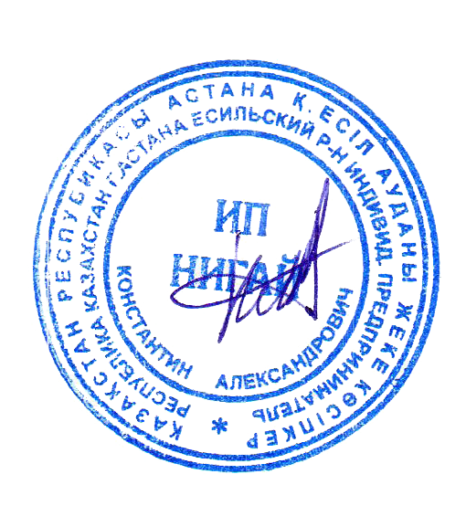

На Ваш запрос сообщаю, что наша компания готова поставить следующее оборудование:
| № | Наименование | Фото, характеристики, комплектация | Кол-во | Цена за единицу в тенге с учетом НДС | Сумма в тенге с учетом НДС |
| 1 | Трактор МТЗ 82.1 | Минитрактор Рустрак-244 – это современная модель средней мощности, с надежным и выносливым трехцилиндровым двигателем КМ385ВТ, изготовленному по технологии японской фирмы mitsubishi. Подробнее | 2шт. | 9 441 500 | 9 441 500 |
| 1 | Трактор МТЗ 82.1 | Минитрактор Рустрак-244 – это современная модель средней мощности, с надежным и выносливым трехцилиндровым двигателем КМ385ВТ, изготовленному по технологии японской фирмы mitsubishi. Подробнее | 2шт. | 9 441 500 | 9 441 500 |
| 1 | Трактор МТЗ 82.1 | Минитрактор Рустрак-244 – это современная модель средней мощности, с надежным и выносливым трехцилиндровым двигателем КМ385ВТ, изготовленному по технологии японской фирмы mitsubishi. Подробнее | 2шт. | 9 441 500 | 9 441 500 |
| 1 | Трактор МТЗ 82.1 | Минитрактор Рустрак-244 – это современная модель средней мощности, с надежным и выносливым трехцилиндровым двигателем КМ385ВТ, изготовленному по технологии японской фирмы mitsubishi. Подробнее | 2шт. | 9 441 500 | 9 441 500 |
| Итого: | 20 182 500 | ||||
| Срок поставки | произвольно | ||||
| Условия поставки | произвольно | ||||
| Условия оплаты | произвольно | ||||
| Гарантия | произвольно | ||||
О компании: https://masterok.kz/about/
О продукции: https://masterok.kz/about/
